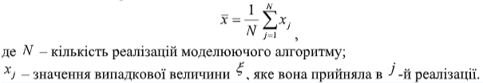

4.1 Обчислення ймовірнісних характеристик випадкового процесу, що моделюється

|
Якщо при моделюванні системи враховуються випадкові чинники, то
шуканими величинами є ймовірності випадкових подій, середні значення і
дисперсії випадкових величин, кореляційні моменти та інші ймовірнісні
характеристики процесу функціонування модельованої системи.
Припустимо, що шуканою величиною є ймовірність настання деякої реальної випадкової події A, а в результаті відтворення N реалізацій процесу, що моделюється, ця подія формально наступила m разів. Тоді оцінкою p шуканої ймовірності p(A) може служити частота формального настання події A: |
|
Аналогічний підхід використовується при оцінюванні ймовірностей
можливих значень випадкової величини ξ, тобто закону її розподілу.
Для цього область можливих значень випадкової величини розбивається на n напіввідкритих інтервалів. Нехай mk – кількість попадань значень випадкової величини ξ в k-й інтервал в результаті відтворення N реалізацій процесу, що моделюється; k = 1,n. Оцінка pk ймовірності можливих значень випадкової величини ξ обчислюється за формулою:

Оцінка D дисперсії випадкової величини ξ може бути обчислена за
формулою:
|
|
|
|